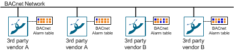

Adapt Alarm Tables
5 – Adapt Alarm Tables
If third-party BACnet devices are integrated in Desigo CC, the alarm table must be checked in accordance with the alarm priorities of the applicable vendor or adapted where applicable. The changes are made per device (recommended) or data point.

Alarm Table Standard Third-Party BACnet Device | ||
Alarm class | Alarm state | Alarm priority |
Fault | fault | not available |
Life Safety | not available | 0‒31 |
Property Safety | not available | 32‒63 |
High Priority Alarm | not available | 64‒95 |
Medium Priority Alarm | not available | 96‒127 |
Low Priority Alarm | not available | 128‒191 |
Status | not available | 192‒255 |
Alarm Table Configurations
The following figure displays how an alarm is configured in the management platform to display in the correct alarm class on the Alarm Overview bar. The example shows the behavior on a data point. The same can be done at the device level.
Alarm Table Standard Configuration | ||
Object | Alarm Setting | Validity Info |
Object model | Default | Valid |
Device | Alarm table | Valid |
Data point instance | Default | Invalid |

Check Notification Class
In order to ensure a correct display on the Alarm Overview bar, the notification class must be properly set up in the field network. This has to happen at the individual devices or data point as well as on the notification class (NC) object. The example shows the behavior on a data point. The same can be done at the device level.


There are field networks that automatically calculate the notification class from the alarm function and alarm class. In this case, the notification class cannot be edited on the alarm object. Change the alarm function or alarm class to receive another notification class.
Create a New Alarm Table
- Select Project > System Settings > Libraries > L1 Headquarters > BA > Device.
- Select the desired field network.
- Select the Library Configurator tab.
- Click Customize
 .
. - A confirmation message is displayed.
- Click OK.
- Empty folders are created on the corresponding level.
- Select Project > System Settings > Libraries > L1 Headquarters > BA > Device [Field Network Type].
- Select the desired alarm table.
- Click Save As
 .
. - In the Save Object As dialog box, do the following:
a. Select a destination folder for the new alarm table.
b. Enter a name and description.
c. Click OK. - The new alarm table is available in System Browser.
- Edit the alarm table as needed.
- Click Save
 .
.
Assign a New Alarm Table
- Select Project > Field Networks > [Network name] > Hardware > [Device].
- In the Object Configurator tab, open the Properties expander.
- Select the Alarm.OffNormal property or another alarm property.
- In the Alarm Configuration expander, select the Valid check box (blue is displayed).
- Select the Field System option and the corresponding Alarm Table from the drop-down list.
- (Optional) Repeat the assignment of a new alarm table for all appropriate devices.
NOTE:
If the Valid check box is displayed in gray (see the color-coded check boxes below), the library entries for the object model and function are not considered.
Inheritance Rules for Object Model, Function, and Object | ||
Icon | Color | Description |
| White | No value is inherited. |
| Gray | The project instance value is inherited. |
| Green | The function inherits the value. |
| Blue | The object model inherits the value. |
| Question mark with a yellow background. | The value is undefined until the instance is saved. |


While you change inheritance properties, you cannot disable an inheritance. As a result, the state changes from  to
to  or
or  when editing. This display for the inheritance function is used for the Main, Properties, Details, and Alarm Configuration expanders.
when editing. This display for the inheritance function is used for the Main, Properties, Details, and Alarm Configuration expanders.